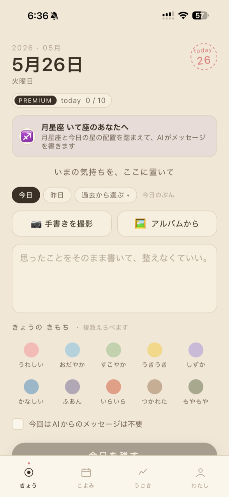
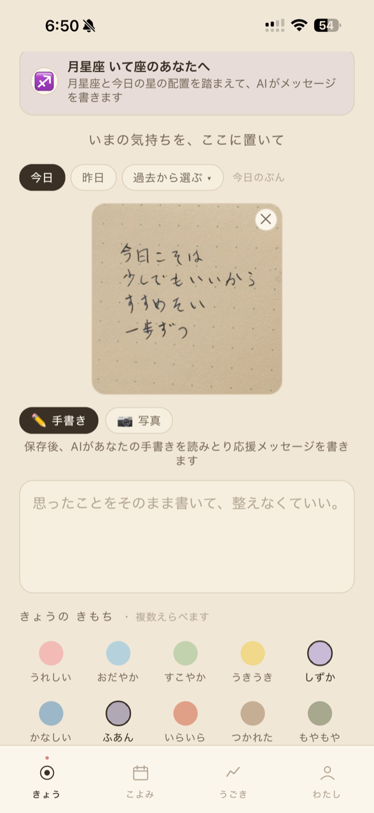
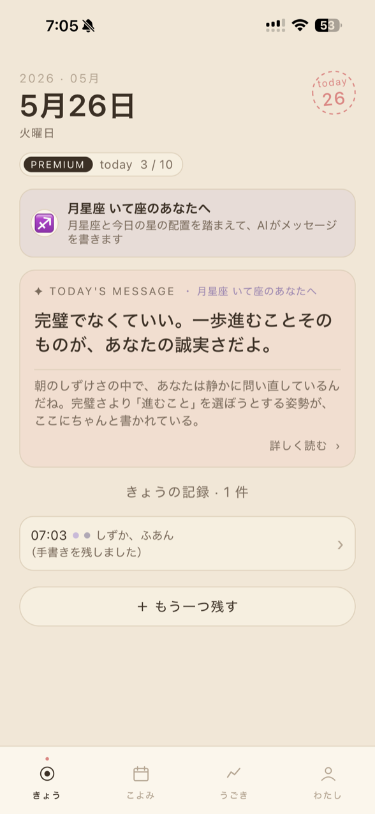
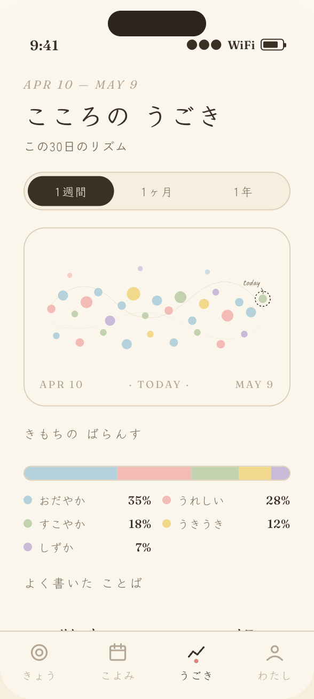
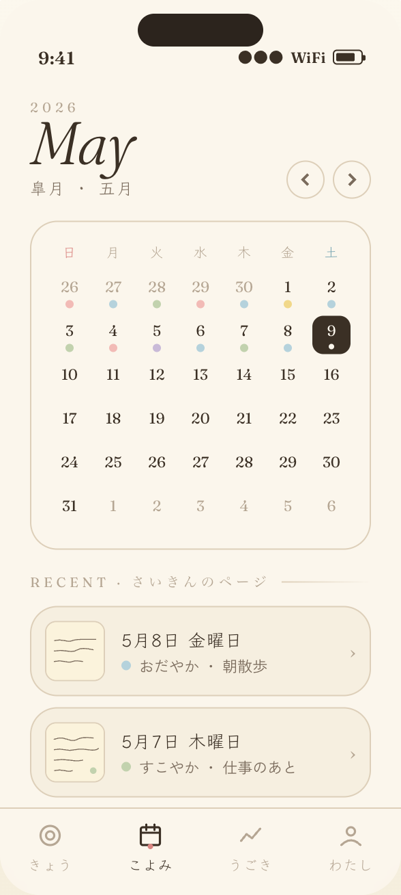
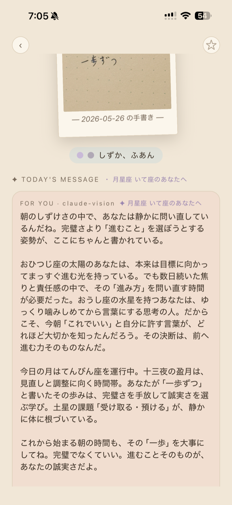

KOKORO JOURNAL
quiet pages, kept by hand.
1日のどこかで、すこしだけ立ちどまる。
日記はあなたの端末で暗号化。
運営も、中身は読めません。

CONCEPT
うまく書こうとしなくていい。きょう感じたことを、ひとことでも。続けるほどに、自分のリズムが、静かに見えてきます。

01／てしごと
その日の気分で選べます。キーボードでさっとテキストを打ってもいいし、紙に書いたページを撮って、手書きのまま残しても。両方を一緒に添えることもできます。手書きはAIが書き起こしも添えるので、あとからの検索や振り返りもなめらかに。

02／よりそう
書き終えると、AIがそっとことばを添えます。励ましすぎず、決めつけず。語り口は「です・ます」と、やわらかな話しことばから選べます。その日の気分と文章を受けとめた、あなただけのひとことを。

03／めぐり
月星座やハウスを踏まえた、その日のあなたへのことば。生年月日を登録すると、ホロスコープが静かに織りこまれます。星が気にならない方は、設定でオフに——そのときは、目の前のことばに寄り添う落ちついたメッセージに変わります。
PRIVACY
あなたの日記は、
あなただけのもの。
運営も、中身を読めません。
本文と写真は、端末で暗号化（エンドツーエンド暗号化）されてからサーバに届きます。AIにことばを頼むときだけ、その一回分が生成のために使われ、応答後は残しません。あいことばと、その予備としての復旧コード——どちらの鍵も、あなたの手元にだけあります。
本文・写真はあなたの端末で鍵をかけてから保存。
運営は暗号文しか持たず、中身を読めません。
あいことば＋復旧コードで、あなただけが開けます。
FLOW
うれしい、おだやか、つかれた——10色から、感じたままに。
短い文でも、紙の写真でも。続けるほど、リズムが見えてくる。
その日のあなたに、AIがそっと。気分と文章を受けとめて、やさしく。
SCREENS


PLAN
1日1回 ・ 広告あり
基本のホロスコープ
月・太陽・土星
1日3回 ・ 広告なし
基本のホロスコープ
月・太陽・土星
1日5回 ・ 広告なし
個人天体まで読む占い
＋ 月のふりかえり
1日10回 ・ 広告なし
全天体・ハウス・ASC/MC
＋ 月のふりかえり
新規登録から7日間は Premium 体験。料金・解約は App Store から、いつでも管理できます。
FAQ
設定時に表示される 復旧コード を保管しておけば、ロック画面の「あいことばを忘れた→復旧コードで開く」から日記を取り戻せます。両方を失うと、E2EE の性質上、運営でも復元できません。
同じ Apple ID でサインインすれば、サーバから日記が戻ります。あいことばを入力すると暗号鍵が復元され、いつも通り使えます。
はい。設定で「占星術を使う」を OFF にすると、星に触れない落ち着いたメッセージになります。後からいつでも切り替えられます。
いつでも解約できます。お使いの Apple ID の「サブスクリプション」設定から手続きください。
現在は iPhone（iOS）のみ対応です。